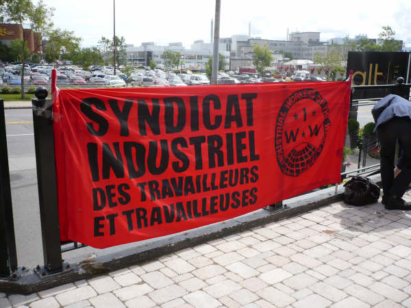

Submitted on Fri, 07/31/2009 - 2:27pm

Québec City, July 14,
2009—On Monday morning, the Starbucks Worker’s Union, which is affiliated with
the Industrial Workers of the World (IWW), submitted a request for union
certification to Commision des relations de travail to represent the employees
of the Germain-des-Prés Starbucks, in the borough of Ste-Foy, in Québec City.
Recent changes to how the work schedule is managed and new requirements
regarding employee availability convinced the fifteen baristas—mostly students—to unite and defend their interests before
an inflexible and arrogant employer.
“Starbucks is sort of the McDonald’s of the coffee world. They offer low
pay and little job security, but until now, at least our work hours were
flexible, which was great for students working part-time,” states union
member Simon Gosselin, adding “Our union
was formed mainly to fight a clause that requires shift supervisors to work a
minimum of 24 hours a week and baristas to work at least 16 hours. This is a
terrible change. Because of it, the 6 current shift supervisors will be demoted
and they’ll take a 10% pay cut and lose their benefits.”
Since 2004, Starbucks
has been the target of an organization campaign led by the IWW, an alternative
union mainly active in the United States, but also in Canada, Great Britain,
and Australia. “Starbucks claims to be a
socially responsible employer that respects communities and contributes to
economic development,” states IWW spokesman Mathieu Jean. “But with its unsteady and poorly-paid jobs
and frequent infringements of workplace safety standards, Starbucks has more of
a tendency to impoverish communities and lower working conditions.
Submitted on Fri, 07/31/2009 - 2:17pm
Disclaimer - The opinions of the author do not necessarily match those of the IWW. The image pictured to the right did not appear in the original article, we have added it here to provide a visual perspective. This article is reposted in accordance to Fair Use guidelines.
Originally posted at CBC News, Tuesday, July 14, 2009
 Employees at a Starbucks franchise in Quebec City filed a request to unionize with Quebec's labour relations board on Monday.
Employees at a Starbucks franchise in Quebec City filed a request to unionize with Quebec's labour relations board on Monday.
If successful, they would become the first workers employed by the coffee chain to unionize in the province.
Employee Simon Gosselin said the move was sparked when Starbucks
made "unfair" changes to working conditions. He said the staff,
comprised of mostly student workers, was being forced to work at least
24 hours a week or be fired.
“I was working between 12 and 16 hours, most of the employees were
doing it as well, and none of us will be able to do that anymore,” said
Gosselin.
The workers have aligned themselves with the Industrial Workers of
the World, a large international union that has butted heads with
Starbucks in the past.
Submitted on Fri, 07/31/2009 - 1:45pm
 Quebec City Starbucks Baristas Steamed over New Scheduling Demands
Quebec City Starbucks Baristas Steamed over New Scheduling Demands
Quebec
City, Canada – Steamed over unreasonable new scheduling demands and
deteriorating working conditions, baristas at the Germain-de-Prés
Avenue Starbucks filed for union accreditation Monday, becoming the
first store in Canada to affiliate with the Starbucks Workers Union, a
campaign of the Industrial Workers of the World labor union. The Labor
Relations Commission of Quebec will grant the union accreditation after
verifying their authorization cards in the next few days.
Policy
changes related to Starbucks’ new “Optimal Scheduling” program, one of
a slew of recent schemes intended to slash labor costs, provided the
main impetus for unionization. Under the new policy, Starbucks requires
nearly around-the-clock availability from workers, while refusing to
guarantee a single work hour each week.
Submitted on Tue, 06/02/2009 - 7:54pm
What do Starbucks and Wal-Mart have in common?
-------------------
Disclaimer - The opinions of the author do not necessarily match those of the IWW. This article is reposted in accordance to Fair Use guidelines.
Submitted on Mon, 06/01/2009 - 5:35pm
Disclaimer - The opinions of the author do not necessarily match those of the IWW. The image pictured to the right did not appear in the original article, we have added it here to provide a visual perspective. This article is reposted in accordance to Fair Use guidelines.
 Critics use a website and social media to portray the coffee giant as anti-union. The company denies being a bad employer.
Critics use a website and social media to portray the coffee giant as anti-union. The company denies being a bad employer.
By Patrick McDonnell - Los Angeles Times, May 28, 2009
Starbucks a hub of union-busting and worker exploitation?
Say it ain't so, Howard Schultz!
The Starbucks chief executive, who actively
cultivates a socially progressive image, is in the cross hairs of a
new-media campaign designed to bolster union representation at the
retail giant and beyond. For five years, Starbucks has been the target
of a limited but sometimes nasty unionization drive that has tarnished
its reputation for high-minded benevolence.
But last week, Brave New Films in Culver City launched an ambitious "Stop Starbucks" offensive, including a website (stopstarbucks.com)
featuring a four-minute video that was also posted on YouTube assailing
Starbucks' treatment of workers, along with a petition demanding that
Schultz "quit following Wal-Mart's anti-union example." By week's end,
almost 12,000 had signed the petition, while nearly 40,000 had viewed
the video, organizers said.
The anti-Starbucks onslaught also
featured an attempted Twitter "hijacking" designed to undermine a
Starbucks promotion in which contestants vied for prizes by submitting
photos of themselves at Starbucks cafes. The virtual saboteurs
forwarded the required "Twitpics" but hoisted signs blaring seditious
mottos such as "I want a union with my latte" or Schultz "makes
millions, workers make beans."